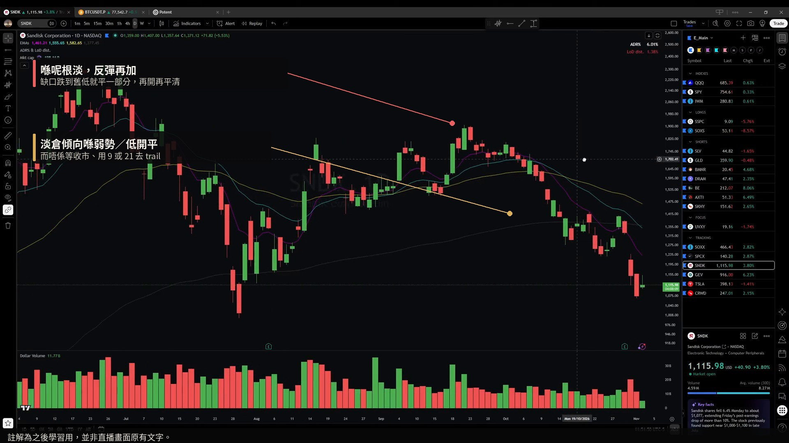
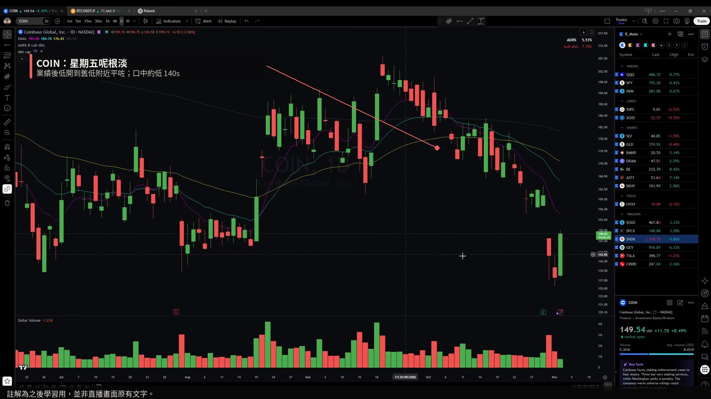

概要
淡倉傾向喺弱勢同低開平，而唔係 trail 均線
有人問通常點樣決定獲利離場，請佢舉例。2:29:51 畫面係 SNDK（Sandisk）日線。Whisper 同 YouTube 自動字幕都把代碼聽成 SNTK，本頁按畫面更正。佢說喺呢根淡，反彈再加；缺口跌到前低就平咗一部分（大約三分一），之後再一次接近開市嘅缺口就把剩餘平清，所以錯過下一跳缺口。總結係：做淡傾向喺弱勢 cover，而唔係等收市、再用 9 或 21 EMA 去 trail；好鍾意喺缺口低開平。若做多，就想喺高開賣一啲。
COIN（Coinbase Global）日線：星期五呢根淡，業績後低開到前低附近就平咗，口中係「near the low 140s」。畫面當時嘅報價大約喺 195 附近，唔好把截圖 OHLC 當成離場價。
圖一 · 主圖
SNDK 日線：淡、加倉，再喺低開平
直播 2:30:00

原話
I think SNDK, this one. Like I shorted it at this candle, and also added on this bounce as well. And I closed some on this gap down, like when it reaches the previous swing lows. Maybe I closed, yeah I closed one third I think. And then on this gap down, I think after near the open, I just exit my whole position, so I miss the next gap down. I think for short, I tend to sell into weakness, like cover into weakness, instead of waiting for the close and trailing with the 9 or 21 EMA. Generally, I would love to close at the gap downs. If I'm long, then I would like to sell something to the gap ups.
SNDK 呢隻。我喺呢根淡，亦喺呢段反彈再加。之後喺呢次缺口向下、去到前低嗰陣平咗一部份，我諗大約三分一。跟住再一次缺口向下，大概接近開市，我就把剩餘倉位全部平咗，所以錯過咗下一跳缺口。我覺得做淡嘅話，我傾向向弱勢賣出，即係喺弱勢 cover，而唔係等收市、再用 9 或 21 EMA 去 trail。一般我好鍾意喺缺口低開平。如果我係做多，就想喺高開賣一啲。
點樣讀
日線見到下跌過程中有缺口同反彈。佢用呢隻股票說明自己平淡倉嘅習慣：弱勢同低開先平，而唔係看到收市再用均線去跟。
「大約三分一」「全部平清」「錯過下一跳」都係原話回顧，畫面核對唔到成交或損益，本頁唔寫死數字，亦唔當必須跟嘅規則。
圖二
COIN 日線：業績低開到前低附近平咗
直播 2:31:40

原話
Recently for COIN, I shorted it on this candle Friday, and then I closed it. After earnings, we got a gap down and then reaching the previous swing lows, so near the low 140s.
近期 COIN 呢邊，我星期五喺呢根淡，之後平咗。業績之後低開，去到前低附近，即係大約低 140s。
點樣讀
日線見到業績後有低開。佢把離場講成「去到前低附近，大約低 140s」。
截圖當時嘅報價大約喺 195 附近，呢個係直播當下嘅市價，唔係佢講嘅離場價。本頁只保留口中嘅 low 140s，唔用畫面 OHLC 去對，亦核對唔到實際成交。
附註
注意事項
- 畫面代碼係 SNDK（Sandisk Corporation）。Whisper 同 YouTube 自動字幕都聽成 SNTK，本頁按畫面更正。
- COIN 口中離場位置係 near the low 140s。唔好把直播截圖當時約 195 嘅報價當成離場價。
- 「三分一」「全部平清」同 cover 習慣都係原話回顧，畫面睇唔到成交價、倉位或損益，所以唔寫死呢啲數字，亦唔當必須跟嘅規則。
- 圖例多數只有顏色同數值，冇印均線周期。本頁唔會把某條彩線寫死成 9 或者 21。